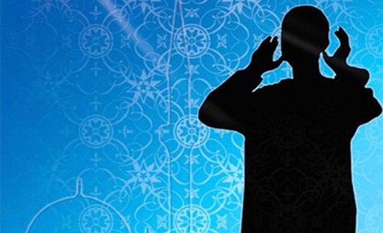
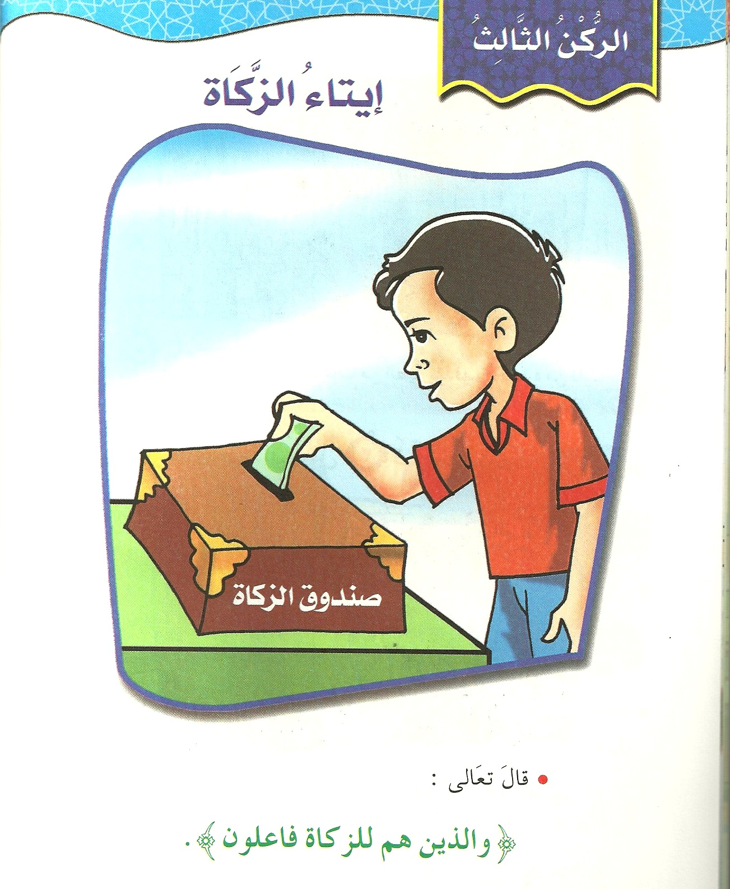
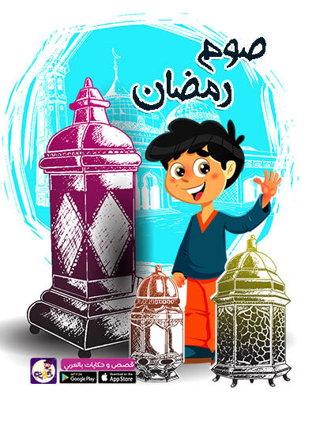
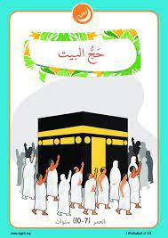

اركان الاسلام
الشهادتان
ومعنى الشهادتين (أن يشهد المسلم بشهادتي الإسلام قائلاً: (أشْهَدُ أنْ لا إِلهَ إلّا اللهُ وأشْهَدُ أنّ محمّداً رسولُ اللهِ))، وتُستفاد هذه الصيغة للشهادتين من قوله تعالى: (أشَهِدَ اللَّهُ أَنَّهُ لا إِلَهَ إِلَّا هُوَ وَالْمَلائِكَةُ وَأُولُو الْعِلْمِ قَائِماً بِالْقِسْطِ لا إِلَهَ إِلَّا هُوَ الْعَزِيزُ الْحَكِيمُ)،[٤] وقوله تعالى: (مُحَمَّدٌ رَسُولُ اللَّهِ وَالَّذِينَ مَعَهُ أَشِدَّاءُ عَلَى الْكُفَّارِ رُحَمَاءُ بَيْنَهُمْ).[٥] أما معنى قول: (لا إلهَ إلّا اللهُ): أي أنّه لا معبودَ يُعبد بحقٍّ في الوجود إلا الله -تبارك وتعالى- وحدَه، وأنّه لا شريك له، بل هو واحد بألوهيّته وربوبيّته وأسمائه وصفاته، قال تعالى: (وَإِذْ قَالَ إِبْرَاهِيمُ لِأَبِيهِ وَقَوْمِهِ إِنَّنِي بَرَاءٌ مِمَّا تَعْبُدُونَ*إِلَّا الَّذِي فَطَرَنِي)؛[٦] فمعنى الشّهادتَين: هو أن يشهد المسلم أنّه لا معبود بحقٍّ إلا الله، وأنّ يشهد أن محمّداً هو عبد الله ورسوله وخاتم الأنبياء والمُرسَلين.[٧]
ايقامه الصلاه
الصلاة هي الصلة بين العبد وربِّه، ولها مكانة عظيمة في الإسلام، وهي أول ما يُحاسب عليه الإنسان يوم القيامة، فإن صلَحتْ صلَحَ سائرُ عمله وإن فسدت فسد سائر عمله؛ فهي عمود الدِّين، والمسلم فُرضت عليه خمسُ صلوات يومياً، وغيرُها تطوع. ويجب على كلِّ مسلم أن يؤدي صلاتَه في وقتها المحدد لها، وعلى الهيئة التي علمنا إياها سيدنا محمد صلى الله عليه وسلم؛ إذ يقول: «صلوا كما رأيتموني أصلي» (أخرجه البخاري برقم (605)، عن مالك بن الحويرث).

ايتاء الذكاء
الزكاة هي عبادة مالية فرَضَها اللهُ على مَن ملك النِصَاب -وهو المقدَّر بخمسة وثمانين غراماً من الذهب- طُهرةً لنفوسهم من البخل، ولصحائفهم من الخطايا؛ قال تعالى: { خُذْ مِنْ أَمْوَالِهِمْ صَدَقَةً تُطَهِّرُهُمْ وَتُزَكِّيهِم بِهَا }[سورة التوبة، من الآية (103)].
مقدارها اثنان ونصف بالمائة لمن مَلَكَ النصابَ وحال على ماله حَوْل قمري كامل. وتُدفع الزكاة للفقراء والمحتاجين، ويَسقط هذا الفرض عمَّن لا يَملك النصاب. ولم يَترك الإسلامُ للمسلم حرية التصرف في هذا المبلغ المستقطع، بل حدَّده في مسالكَ ثمانيةٍ يُمكن للمسلم أن يختارَ أحدها لإنفاق الزكاة؛؛؛
قال تعالى: { إِنَّمَا الصَّدَقَاتُ لِلْفُقَرَاءِ وَالْمَسَاكِينِ وَالْعَامِلِينَ عَلَيْهَا وَالْمُؤَلَّفَةِ قُلُوبُهُمْ وَفِي الرِّقَابِ وَالْغَارِمِينَ وَفِي سَبِيلِ اللَّهِ وَابْنِ السَّبِيلِ فَرِيضَةً مِنَ اللَّهِ وَاللَّهُ عَلِيمٌ حَكِيمٌ }[سورة التوبة، الآية: (60)].

صيام رمضان
أمَّا الصيام فهو صيام شهر رمضان، ويعتبر شهر رمضان موسماً عظيماً تكثُر فيه الطاعات، وهو شهر مبارك تتنزل فيه الرحمة ويُجدِّد فيه العبدُ عهده مع الله ويتقرب إليه بالطاعات. ولصيام رمضان فضائل عدَّة، فقد تكفَّل اللهُ لمن صامه إيماناً واحتساباً أن يغفر ذنبه. والمسلم يصوم عن الطعام والشراب والمعاشرة الزوجية -لمن كان متزوجاً- من طلوع الفجر إلى غروب الشمس. ويَسقط هذا الفرض عمن لايقْوَى على صومه كمرض أو سفرٍ؛ قال تعالى: { فَمَنْ كَانَ مِنْكُمْ مَرِيضًا أَوْ عَلَى سَفَرٍ فَعِدَّةٌ مِنْ أَيَّامٍ أُخَرَ }[سورة البقرة، من الآية (184)].

الحج
لحج لغةً: هو القصد إلى مُعظَّم، واصطلاحاً: هو زيارة المسجد الحرام في مكة المكرمة والوقوف بعرفة والطواف بالكعبة المشرفة. وقد فُرض الحج على كل مسلم بالغ يَملك القدرة المالية والبدنية؛ قال تعالى: { وَلِلَّهِ عَلَى النَّاسِ حِجُّ الْبَيْتِ مَنِ اسْتَطَاعَ إِلَيْهِ سَبِيلًا }[سورة آل عمران الآية (97)]. وقد فرض الله الحج تزكيةً للنفوس، وتربيةً لها على معاني العبودية والطاعة والصبر، قال النبي صلى الله عليه وسلم: «مَن حج هذا البيت فلم يرفُث ولَم يَفسُق رجع كيوم ولدته أمه» [رواه البخاري برقم (1449)، ومسلم برقم: 438 - (1350)، عن أبي هريرة رضي الله عنه].
